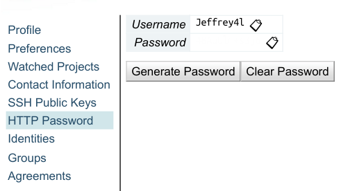
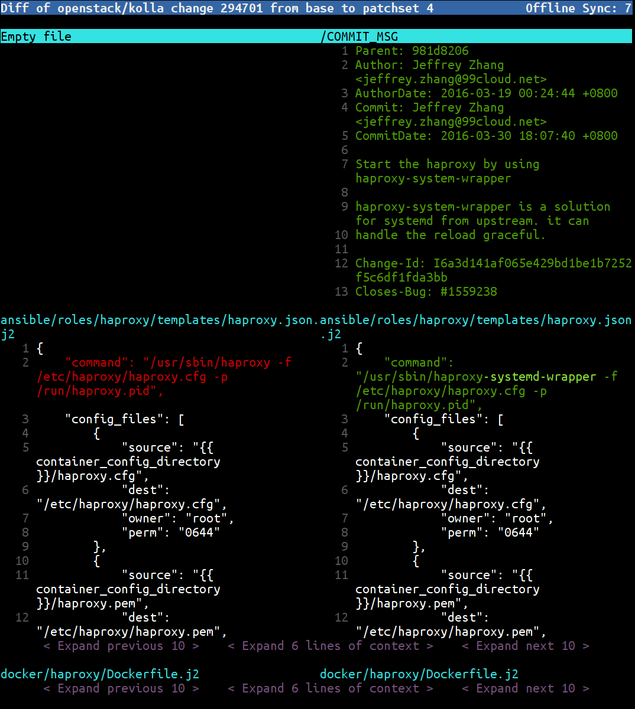

现在很多项目都使用 Gerrit 做为代码 Review 工具。OpenStack 所有的项目就是放在 Gerrit 上的。Gerrit 提供了一个 Web 页面来做 Code Review。今天我介绍一个更加高效的工具来处理 Gerrit Review。它的名字叫 gertty。
Gertty 的 OpenStack 下面的一个项目1，官方的介绍是：Gertty is a console-based interface to the Gerrit Code Review system。就是一个基于终端的 Gerrit 代码 Review 工具。
相比较 Web 版本，它的优势体现在
gertty 就是一个 Python 写的应用，所以安装很方便。可以从 pypi 安装，也可以从直接从源码安装。
pip install gertty从源码安装
git clone https://github.com/openstack/gertty.git
cd gertty
pip install .Gertty 使用一个 YAML 格式的配置文件。可以从源码里找到一些例子2。我们以 OpenStack 为例。
首先要选配置在 Gerrit 上面配置自己的 HTTP Passowrd。打开 https://review.openstack.org/#/settings/http-password , 去修改里面的 Password

如果使用源码安装，请把把源码里的 examples/openstack-gertty.yaml 文件拷贝到 ~/.gertty.yml，修改该文件内容如下(主要是 servers 下面的内容)，其它部分不用修改：
如果使用 pip 安装的，在 /usr/local/share/gertty/examples/openstack-gertty.yaml 这个位置可以找到所需要的文件。
servers:
- name: openstack
url: https://review.openstack.org/
username: Jeffrey4l
password: xxxx
git-root: ~/直接运行 gertty, 看到如下欢迎界面。
如里面的说明，按F1或? 进帮助， 我们按 L 进项目列表，找到自己感兴趣的项目按 s 进行订阅。

按 F2 可以看到自己的 changes

按 F3 可以看到需要自己 review 的代码

基中，高亮的是需要自己 review 的代码，灰色的是已经 review 过的。
选择一个进入后，能看到已经所有的 review 信息。包括 CI 的结果，评论，所有的 PatchSet。

再按 d， 可以查看修改的 diff

在任何界面都可以按 F1 或 ? 打开帮助，查看该界面下有哪些按键可以用。
examples/reference-gertty.yml 文件里的内容点击「阅读原文」，能看到更多链接。